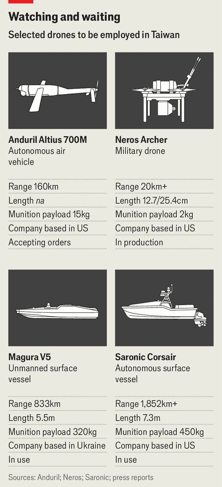

China would face a “hellscape” in a war over Taiwan
Drones and artificial intelligence may give America an edge

Sep 17th 2026
IN AN OFFICE block on the outskirts of Taipei, Chan Hsiang-chih opens a workshop door and offers a glimpse at the future of warfare in the Taiwan Strait. Inside sit two torpedo-shaped undersea drones, prototypes for Taiwan’s navy. “That’s where the bomb goes,” he says, nodding to the rear of one. It can identify targets and deliver its payload or launch a kamikaze strike, alone or in a swarm. In 2015 Dr Chan started his business, AwareOcean, to supply offshore windfarms. Now he builds the kind of low-cost autonomous weapons that Taiwan and America need for their new plan to thwart a Chinese invasion.
Dubbed “Hellscape”, the plan draws on lessons from Ukraine and Iran in using large numbers of low-tech drones, combined with artificial intelligence, to frustrate a far more powerful adversary. It envisions flooding the Taiwan Strait with relatively cheap aerial, sea-surface and underwater drones just as Chinese forces launch an attack. Assuming that China jams communication links with these weapons, they will strike Chinese ships using inertial guidance, image recognition or on-board AI that prioritises targets, evades counter-measures and co-ordinates attacks with other drones. That will not stop an invasion. But it could raise the costs and buy time and space for American warships and planes to reach Taiwan.

Whether America would actually intervene is an open question, especially since Donald Trump’s return to the White House. Visiting Beijing in May, he questioned the logic of fighting so far from America and said he would use arms sales to Taiwan as a bargaining chip with Mr Xi. Sure enough, in the run-up to Mr Xi’s visit to Washington on September 24th, Mr Trump has held off approving a $14bn arms package for Taiwan that was cleared by Congress back in January. Taiwanese officials worry that more concessions to China to secure deals on trade and technology may follow. And they fear that deliveries of earlier American arms packages could be delayed by shortages caused by the war against Iran.
Yet American and Taiwanese military commanders are quietly forging ahead with Hellscape, a plan conceived when Joe Biden was president. They think China is unlikely to attack before the end of the decade, when America will have a new leader. And they believe their odds of success have improved in the light of the wars in Ukraine and the Middle East, even accounting for China’s growing capabilities. American strategists have long taught that an attacking force needs three times the firepower of a defender to secure victory. They now think the attacker needs an advantage of more like 20 or even 30 to one.
“Uncrewed systems are to today’s conflicts what the machinegun was in World War I and the tank in World War II: a game-changing technology that redefines the battlefield,” Raymond Greene, America’s de facto ambassador in Taipei, told a conference there on September 9th. Taiwan could easily exploit the lessons from Ukraine and Iran because of its world-leading semiconductor industry, strong manufacturing base and booming economy. It also has access to battle-tested American aerial drones (of which Taiwan bought 2,000 in August). And it is collaborating with America on sea drones and AI-enabled swarming technology, he said.

The problem is how to make the plan work. America needs the political will and all the drone and missile capacity it can get. The plan’s proponents look beyond Mr Trump, banking on bipartisan congressional support for Taiwan (which remains strong) and the island’s importance to America’s AI industry. But some fear the influence within the Republican Party of a “restrainer” camp that favours abandoning Taiwan. Others worry that Mr Trump has deepened public opposition to overseas wars and done lasting damage to relations with Asian allies, whose support they need to make Hellscape work.
America’s efforts to build more low-cost drones have borne fruit. It reverse-engineered an Iranian aerial-strike drone in 18 months. And the Pentagon plans to buy 200,000 cheap UAVs by 2027. But testing backlogs and shortages of non-Chinese components have slowed progress. Hellscape needs far fewer sea drones: a single successful strike can sink or cripple a warship, as Ukraine showed in the Black Sea. Some American models designed for a war over Taiwan have been used against Iran. And American troops tested a Ukrainian kamikaze boat in the Philippines in April. Still, these are mostly experimental systems, produced in negligible numbers, says Professor Michael Horowitz of the University of Pennsylvania, who led the Pentagon’s drone drive under Joe Biden.
He and others also warn that such drones cannot replace bigger, older and costlier weapons. The plan is for drones to exhaust China’s missile interceptors and damage its invasion flotilla sufficiently to make it easier for American aircraft-carriers, submarines and other platforms to hit their targets. The worry is that the Iran war has diverted America’s forces from the Pacific and depleted its weapons stockpiles, especially of precision missiles and missile interceptors. Restocking America’s magazines will take years. Some worry that Mr Xi might try his luck before then, possibly as soon as 2028, when Taiwan holds its next presidential election—about ten months before Mr Trump leaves office.
“The other thing to keep in mind”, says one former Pentagon official, “is that it would not be consistent with American policy…to put large quantities of American weapons in Taiwan that we would then come in and use.” Changing that policy would invite an unholy row with China. That is why, says the former official, “it is all the more important to sufficiently train and equip Taiwanese forces.”
Taiwan’s biggest challenge is to produce enough drones. Soon after Russia’s full-scale invasion of Ukraine, Taiwan began to develop a drone industry free of Chinese components. It aims to buy 208,000 locally produced aerial-attack drones and 1,320 suicide-boats by 2032. Output and exports have grown in the past two years. But squabbling over funding, which was only approved in August, has delayed the plan.
The main obstacle was the Kuomintang, Taiwan’s biggest opposition party, which wants closer ties to China. Should it return to power in 2028, further delays could ensue. “If a real crisis hits, the timeline would probably be compressed significantly, just like in Ukraine,” says Chen Ping-hei, a professor at National Taiwan University who works on the drones. But as of now “the manpower and funding is clearly insufficient.” He thinks Taiwan needs 4m UAVs and 10,000 marine drones.
There are sceptics in Taiwan’s armed forces, too. They worry that investment in drones could come at the expense of bigger-ticket items, such as Patriot missiles for new air defences. Some also want fighters and warships to help counter Chinese actions that fall short of an invasion, such as a blockade. (Chinese customs vessels recently began regular patrols east of Taiwan.) Others put more emphasis on striking China’s mainland early and preserving Taiwan’s forces for a counter-attack.
China’s response raises troubling questions. It initially mocked Hellscape, with one official military outlet branding it a “psychotic plan” and calling America a paper tiger unable to produce the necessary drone swarms. The People’s Liberation Army (PLA) still enjoys an overwhelming advantage in drone numbers and production capacity. It has been testing its own unmanned systems in drills around Taiwan, while studying developments in Ukraine and the Middle East. It has also sent officers to Russia to train with its Russian counterparts in drone and counter-drone operations, and to gain access to relevant data from the front lines.
But recently there have been signs of concern within the PLA. Mr Xi’s purges have made it harder to meet his order for it to be ready to execute an invasion, if instructed, by 2027. Some Chinese military experts now suggest that Hellscape requires the PLA to update its invasion plans and to invest more in shipborne weapons that could identify and destroy drones.
Hellscapers concede that the obstacles are daunting. But to deter conflict, its proponents say, Taiwan and America do not need to demonstrate that they could defeat China outright. They just need to convince Mr Xi that he would struggle to achieve the quick and relatively cost-free victory that he hopes for. ■
For exclusive coverage of Asian politics, economics and security, sign up to Asia Bulletin, our weekly subscriber-only newsletter.